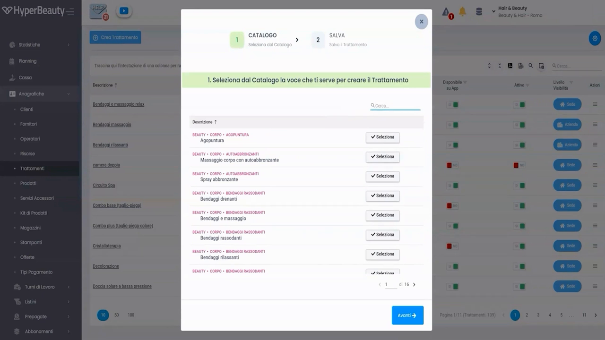
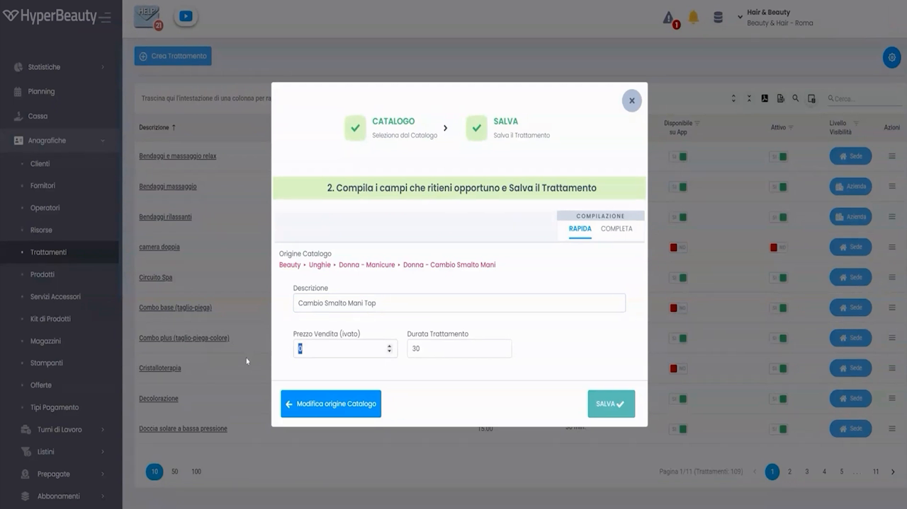
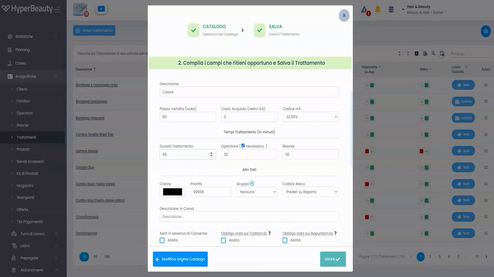
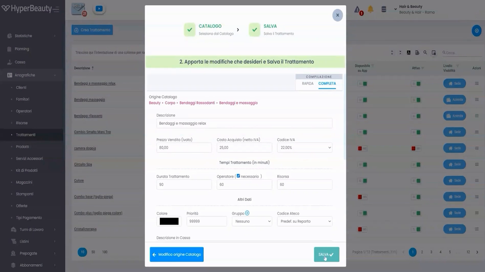
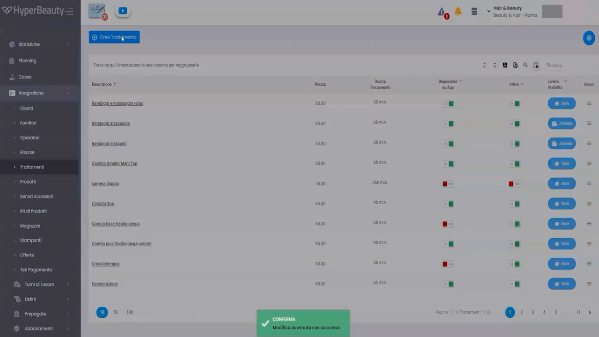

Listino Trattamenti
I trattamenti sono il cuore operativo del gestionale: ogni appuntamento è associato a uno o più trattamenti, che determinano la durata del blocco in agenda, il prezzo in cassa e gli operatori abilitati a eseguirlo.
Prerequisito: Settori Commerciali
Prima di iniziare, verificare che i Settori Commerciali siano stati configurati in Impostazioni → Sede → Dati Sede → tab Settori Commerciali. Questa operazione abilita il catalogo predefinito e velocizza enormemente l'inserimento.
Accedere al listino
Percorso: Menu laterale → Anagrafiche → Trattamenti
La schermata elenca tutti i trattamenti configurati per la sede. Per ciascuno sono visibili: Descrizione, Prezzo, Durata Trattamento, Disponibile su App, Attivo, Livello Abilitato.
Per aggiungere un trattamento cliccare + Crea Trattamento in alto a sinistra.
Il wizard di creazione — 2 step
La creazione di un trattamento avviene in un wizard modale con due passaggi sequenziali:
Step 1 → CATALOGO — seleziona un trattamento dal catalogo predefinito come punto di partenza
Step 2 → SALVA — modifica i dettagli e salva
Step 1 — Seleziona dal Catalogo

Il catalogo mostra i trattamenti disponibili in base ai settori commerciali abilitati, organizzati per percorso (es. BEAUTY • CORPO • BENDE RASSODANTI). Un campo di ricerca permette di filtrare rapidamente per parola chiave.
Cliccare Selezione accanto al trattamento desiderato, poi Avanti → per procedere.
Creare un trattamento non presente nel catalogo
Se il trattamento non è nel catalogo, scorrere in fondo alla lista e utilizzare l'opzione per crearlo manualmente — tutti i campi saranno vuoti e completamente liberi.
Step 2 — Compilazione e salvataggio
Dopo aver selezionato il trattamento dal catalogo, il sistema mostra il form di compilazione con due modalità selezionabili tramite tab:

Compilazione Rapida
La modalità COMPILAZIONE RAPIDA mostra solo i campi essenziali:
| Campo | Descrizione |
|---|---|
| Descrizione | Nome del trattamento — precompilato dal catalogo, modificabile |
| Prezzo Vendita (IVato) | Prezzo al pubblico comprensivo di IVA |
| Durata Trattamento | Durata in minuti — determina la lunghezza del blocco in agenda |
Cliccare SALVA ✓ per confermare. Il trattamento appare immediatamente nel listino.
Quando usare la modalità Rapida
Ideale in fase di startup per inserire velocemente tutti i trattamenti con i dati minimi. I dettagli (costo acquisto, operatori, risorsa) si possono completare in seguito modificando il trattamento.
Compilazione Completa
La modalità COMPILAZIONE COMPLETA espone tutti i parametri del trattamento:

Sezione Prezzi e IVA
| Campo | Descrizione |
|---|---|
| Prezzo Vendita (IVato) | Prezzo finale al cliente |
| Costo Acquisto (Netto IVA) | Costo sostenuto dal salone — usato per il calcolo margine nei report |
| Codice IVA | Aliquota IVA applicata (es. 22,10%) — precompilata in base alla nazione sede |
Sezione Tempi

| Campo | Descrizione |
|---|---|
| Durata Trattamento (minuti) | Lunghezza totale del blocco in agenda. Impatta direttamente sulla capacità dell'agenda: un trattamento da 90 min blocca l'operatore per 90 min. |
| Operatore (checkbox + minuti) | Se spuntato "Necessario", l'appuntamento richiede un operatore. Il valore in minuti indica per quanto tempo l'operatore è effettivamente impegnato sul cliente (può essere inferiore alla durata totale se parte del tempo è "in posa"). |
| Risorsa (minuti) | Per quanti minuti occupa la risorsa (cabina, lettino, ecc.). Utile per trattamenti con posa dove il cliente è autonomo ma occupa lo spazio. |
Durata vs tempo operatore vs tempo risorsa
Esempio: colorazione da 90 minuti totali. L'operatore è impegnato attivamente solo 30 minuti (applicazione). La cabina è occupata per tutti i 90 minuti (posa inclusa). Impostare: Durata = 90, Operatore = 30, Risorsa = 90. Questo permette all'agenda di assegnare l'operatore ad altri clienti durante la posa.
Sezione Altri Dati
| Campo | Descrizione |
|---|---|
| Colore | Colore del blocco appuntamento in agenda — rilevante se si usa la modalità colori per trattamento |
| Priorità | Ordine di visualizzazione nelle liste e nel selettore trattamenti in cassa |
| Gruppo | Raggruppamento per report e statistiche |
| Codice Ateco | Predefinito su reporto — gestito dal registratore telematico |
| Descrizione in Cassa | Testo alternativo che appare sullo scontrino (se diverso dalla descrizione interna) |
Alert e obbligatorietà
Nella parte inferiore del form sono presenti tre checkbox di alert:
- Abilitato su Trattamento — attiva avvisi specifici al momento della prenotazione
- Obbligato nello sul Trattam.to — rende obbligatoria la compilazione di un campo al momento della prenotazione
- Obbligato nello sul Rapprtm.to — obbligatorio per i report
Per la maggior parte dei trattamenti standard questi campi si lasciano disabilitati.
Il listino dopo l'inserimento
Dopo il salvataggio il sistema mostra una notifica verde di conferma e il trattamento appare nella lista.

La lista mostra per ogni trattamento: Descrizione, Prezzo, Durata, disponibilità su App BeWelly, stato Attivo e Livello Abilitato. Da qui è possibile modificare qualsiasi trattamento cliccando sul pulsante Modif. a destra.
Consigli pratici per l'inserimento
Prepara i dati in anticipo
Far preparare al titolare un foglio Excel con: nome trattamento, prezzo, durata in minuti. L'inserimento nel gestionale è rapido — avere i dati pronti dimezza i tempi. Un listino da 30 trattamenti si inserisce in 15-20 minuti con la modalità Rapida.
La durata è critica
Una durata sbagliata si ripercuote su tutta l'agenda: trattamenti troppo brevi creano sovrapposizioni, troppo lunghi sprecano slot disponibili. Verificare sempre con il titolare i tempi reali di erogazione prima di inserire.
Modifica successiva
Tutti i trattamenti si possono modificare in qualsiasi momento da Anagrafiche → Trattamenti → Modif. Le modifiche ai prezzi non impattano gli appuntamenti già salvati.
Riepilogo inserimento trattamento
| Passo | Azione | Modalità |
|---|---|---|
| 1 | Anagrafiche → Trattamenti → + Crea Trattamento | — |
| 2 | Cerca e seleziona dal catalogo predefinito | Step 1 |
| 3 | Scegli Compilazione Rapida o Completa | Step 2 |
| 4 | Verifica/modifica Descrizione, Prezzo, Durata | Obbligatorio |
| 5 | Imposta tempi Operatore e Risorsa se necessario | Consigliato |
| 6 | Clicca SALVA ✓ | — |
| 7 | Ripeti per tutti i trattamenti del listino | — |
Documento a cura di Custom S.p.a. — HyperBeauty Training Program — Versione 1.0 — Giugno 2026